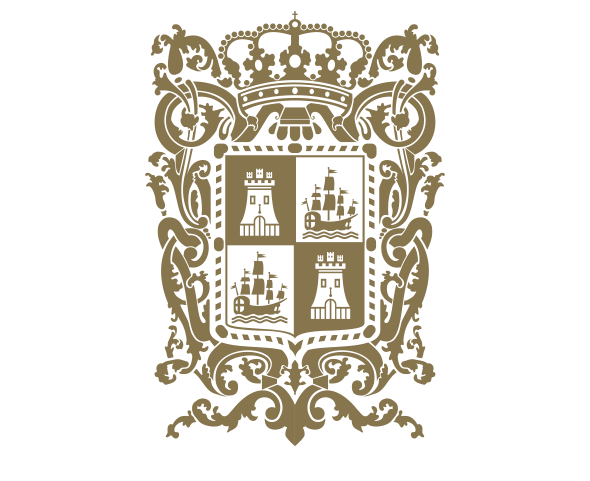

Antes de la llegada de los españoles, el territorio de Campeche estuvo habitado por los mayas, una de las civilizaciones más avanzadas de Mesoamérica. Los mayas construyeron ciudades, templos y centros ceremoniales, además de desarrollar conocimientos en astronomía, matemáticas y agricultura.
Una de las ciudades más importantes fue Zona Arqueológica de Calakmul, considerada uno de los centros políticos y culturales más poderosos del mundo maya.
En el siglo XVI llegaron los conquistadores españoles encabezados por Francisco de Montejo. En 1540 se fundó la villa de San Francisco de Campeche, que se convirtió rápidamente en un importante puerto comercial.
Desde Campeche se exportaban productos como:
Palo de tinte
Maderas preciosas
Sal
Productos agrícolas
La riqueza comercial del puerto atrajo a numerosos piratas y corsarios ingleses, franceses y holandeses durante los siglos XVI y XVII.
Los ataques y saqueos eran frecuentes, por lo que los habitantes construyeron:
Murallas
Fuertes
Baluartes de defensa
Gracias a estas construcciones, la ciudad de Campeche conserva actualmente gran parte de su arquitectura colonial.
Durante la colonia, Campeche dependía políticamente de Yucatán. Sin embargo, existían diferencias económicas y políticas entre ambas regiones.
La economía campechana creció principalmente gracias al comercio marítimo y a la exportación del palo de tinte, muy valorado en Europa.
En el siglo XIX, Campeche participó en los movimientos relacionados con la Independencia de México.
Tiempo después surgieron conflictos políticos con Yucatán, lo que llevó a la separación de Campeche.
El 7 de agosto de 1857, Campeche fue reconocido oficialmente como estado libre y soberano de México.
En el siglo XX, la economía del estado se fortaleció con:
La pesca
La agricultura
La ganadería
La explotación petrolera, especialmente en Carmen
Actualmente, Campeche es reconocido por:
Su herencia maya
Sus tradiciones culturales
Su arquitectura colonial
Sus zonas arqueológicas
Su riqueza natural e histórica.